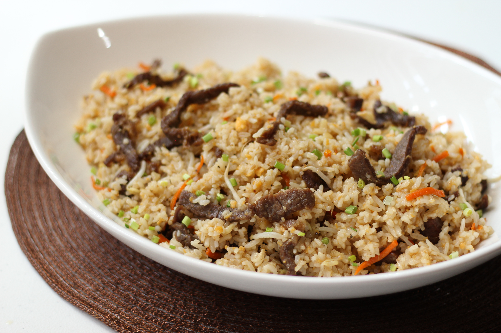

Tapa Rice Recipe

Description
Tapa is a Filipino dish made of thinly-sliced beef, chicken, pork, carabao, or game meat such as deer and wild boar.
Ingredients:
- 1/3 cup cooking oil
- 1 (500 g) pack MONTEREY EXCLUSIVES PREMIUM BEEF TAPA
- 1 (50 g) pc carrot, cut into matchsticks
- 8 cloves garlic, chopped
- 2 pc MAGNOLIA BROWN EGGS, beaten
- 5 cups cooked rice
- 1 cup bean sprouts (togue)
- 1/4 tsp iodized fine salt
- 1 tbsp chopped green onions (optional)
Steps:
- Heat oil in a non-stick wok or large pan. Fry tapa until cooked through. Slice into strips and then set aside.
- In the same pan, sauté carrot and add garlic. Cook until garlic becomes sticky. Make a well in the center and add eggs. Cook until almost set and then scramble.
- Add tapa, rice and mix well and then add bean sprouts. Season with salt and mix well. Top with green onions just before serving.
Homepage